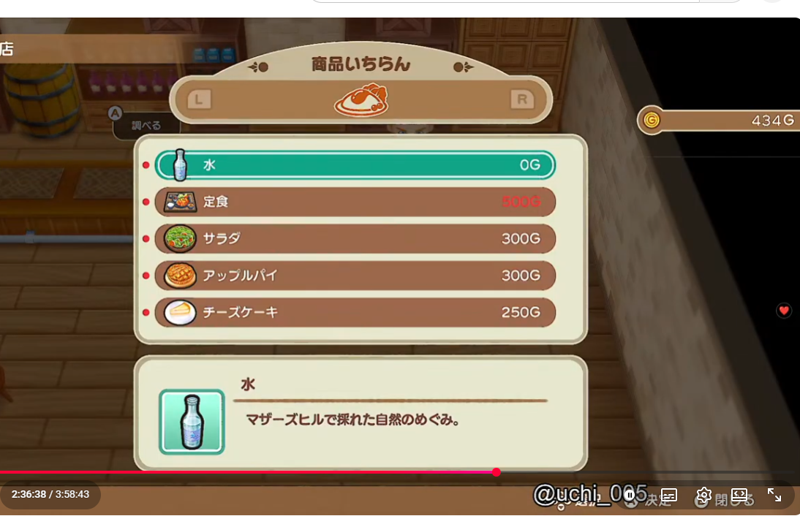
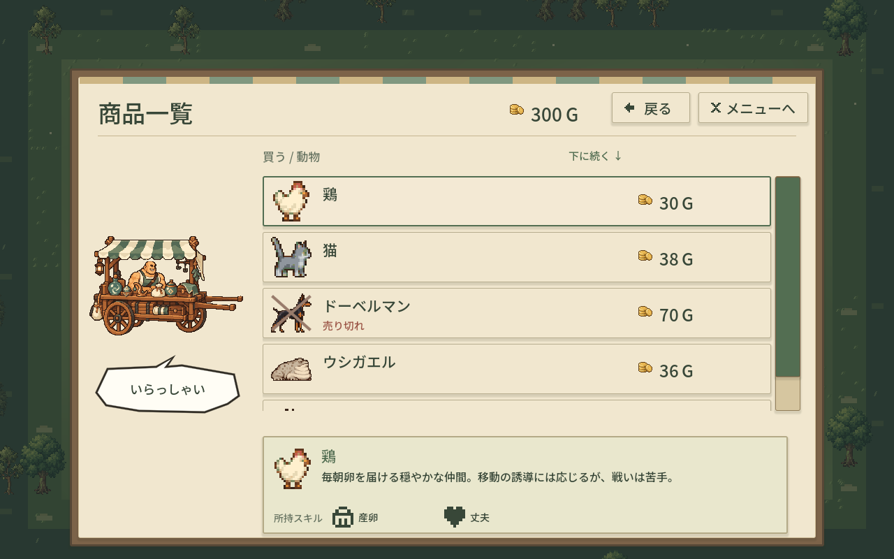
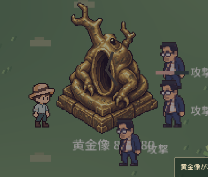
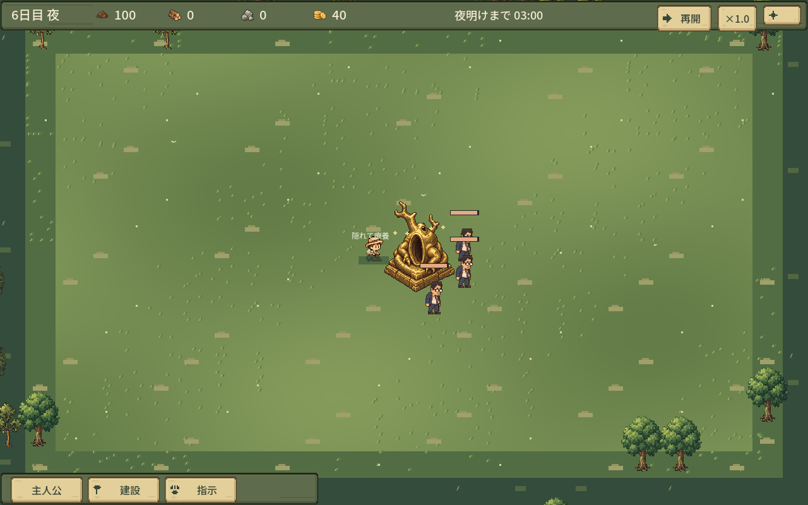
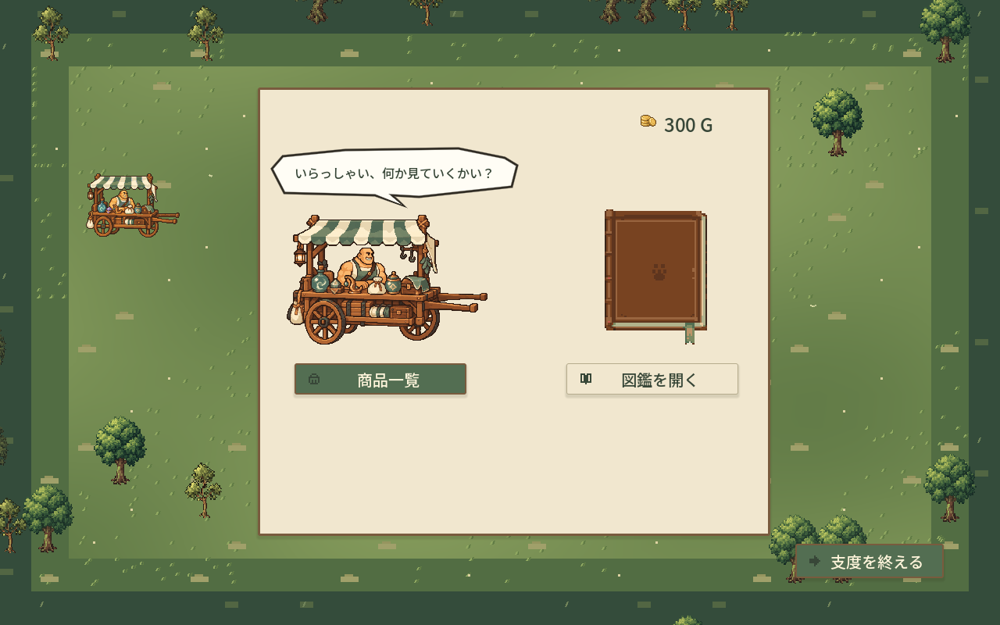
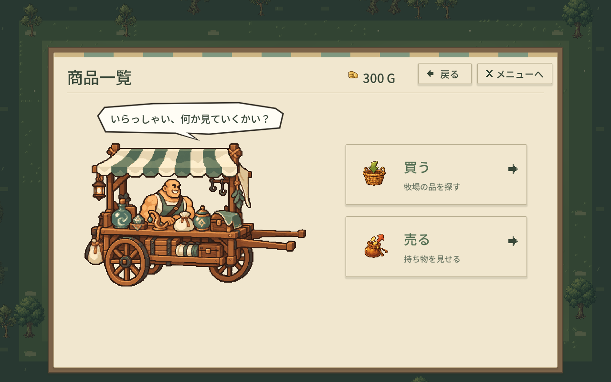
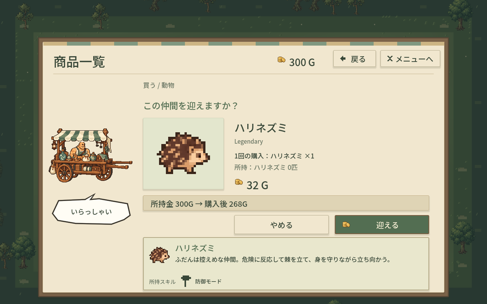
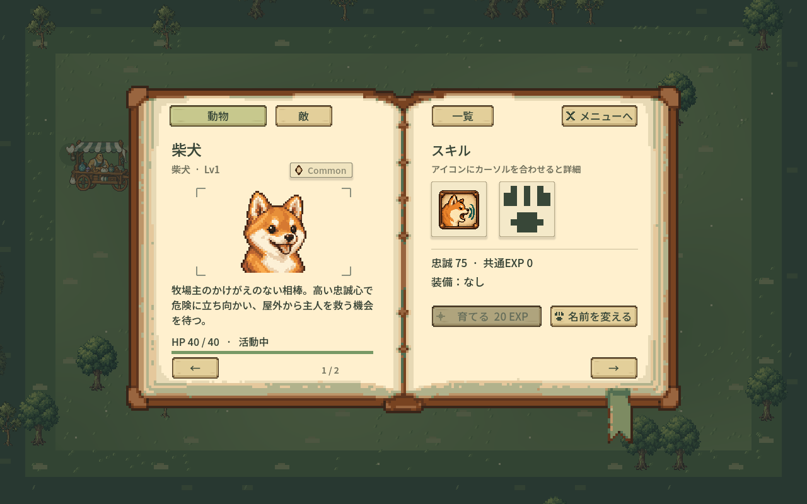

実装 912b98739618c4fb1e02527473746278b383afdb
素材 b0e917a11f205190dde0136165a72c189f39e275。最終隔離GPU：dirty=false、非対話desktop確認、57入力/状態検査。人物・所持金・在庫・敵配置のfixtureを含み、人間の試遊とは区別します。
最新のPlay-Isolated.cmd（実行できなければ確認入口01から） / 結果と保留 / 指定事項と仮案
左はユーザー提供の参考/症状画像でSHA不明、右は今回実装。共通条件の性能比較・同一セーブ再現としては扱いません。








候補アイコンの最終採用、商人口パク素材、BGM実スピーカー聴感、物理IME、高カルマの人間通し試遊。BGM計算とMP3ループはテスト済み。seed31祈りなしでは通常経済/戦闘を使う自動プレイで10夜成功。
旧版と通常保存は保持。新しい試遊版は専用user-data、試験保存は別フォルダー。GitHubへのpush/mergeなし。ここで停止。